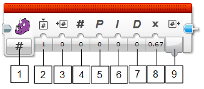

Pixy PID Block
The Pixy PID block allows you to implement a simple PID controller. Proportional Integral Derivative (PID) controllers are commonly used in feedback control systems. There is a feedback controller in your home’s thermostat and your car’s cruise control. The basic idea is you measure, then compare with a setpoint (the “goal”), then calculate how you should act. For example, your home’s thermostat first measures the temperature, then compares to the desired temperature, then calculates if it should turn on the heater or air conditioner. A PID controller works in the same way, but uses a special equation to calculate the “action” value. All the user needs to do is set the three gain values, one for proportional, one for integral, and one for derivative.
There is a good explanation of PID control here.

Parameters
- Mode Selection: currently there is a single mode, so this isn’t used for now.
- Instance: instance of the PID block. Up to 8 instances of the PID block can be used independently in the same program. If you need more than one PID block, be sure to give them different instance IDs, otherwise the two PID blocks will share the same memory.
- Value In: this is the input for the measured value. For Pixy, you would typically input the X or Y outputs, but really any measured value can go here, even from sensors other than Pixy, like the IR proximity sensor.
- Set Point: this is the “desired value”. In other words you want to “drive” the sensor value (Value In) to this value.
- Proportional: proportional gain input.
- Integral: integral gain input.
- Derivative: derivative gain input.
- PID Multiplier: this is a multiplier for the final output. It is especially useful if you need to invert the output (you do so by setting to -1). This value is 1 by default.
- Control Output: this is the output of the controller. This is typically connected to your “action”, which is almost always one or more motors (for LEGO Mindstorms). You could (in theory) connect this to your furnace if you wanted to build a home thermostat, and you had a temperature sensor connected to Value In, but that’s a project for another day!